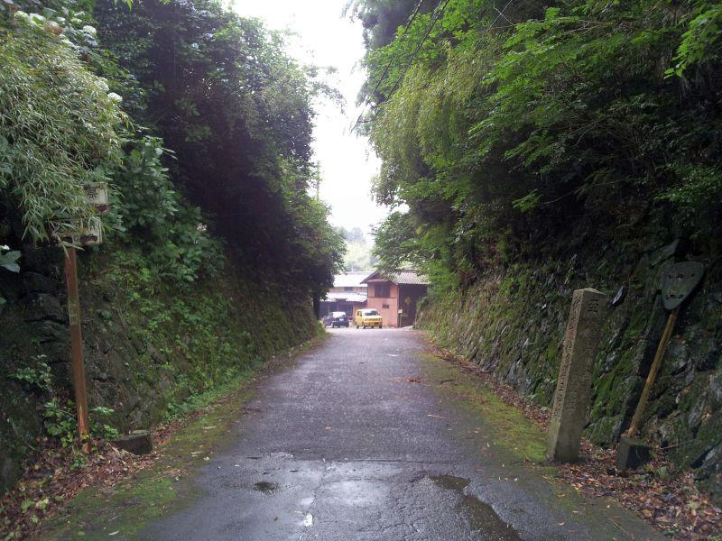

県界を示す標石が残る旧道 < 境目峠 / 愛媛県四国中央市・徳島県三好市 >
県境(けんざかい、けんきょう)
県界(けんざかい、けんかい)
日本の地方行政単位である 47都道府県の分け目の事を そう呼ぶ。
通常 県界は、山の稜線や 川、海等の 自然によって分けられている場合が多い。
一般的に、人が往来をためらうほど大きな天然の要害を越えては 交流が発生しにくく、異なる文化が発達するため。それゆえ 生活圏の違いを理由に統治する行政団体(＝都道府県)が変わるのは、理に叶っていると言える。
ただ、それも橋やトンネルの新設 他の交通機関の発達によって、県設置以前は行き来が乏しかった地域の行き来が、後年 盛んになった例は数多く存在する。
また 他の線引き基準として、
藩政時代の力関係によって線引きが行われ 県を設置する際にそのまま踏襲された地域があれば、明治初年の廃藩置県政策によって 当時の世情に合わせて県界が引き直されたところもある。
幕末の戊辰戦争で 明治新政府に付いた藩は廃藩置県の際に優遇された。旧幕府側に付いた方は、分割や他藩と合併させられる等 冷遇された。などの説もあります。
いずれにしても 県界の線は、文化圏の変わり目であったり 歴史の優劣など、ロマンを秘めているものと言って良さそうです。
愛媛/徳島県界・境目峠

境目峠(さかいめとうげ / 愛媛県四国中央市川滝町境目・徳島県三好市池田町佐野)
四国に4つある県の二県のうち、愛媛と徳島の両者を分ける地点の一つが こちらの峠。
もっとも、
この場所は官道(＝現国道格)として開削されたものであり、古道としての境目峠は 厳密には別の場所です。
この場所自体も 前後に狭小なヘアピンカーブが存在することや、冬季には積雪があり交通が遮断されてしまう等 交通の難所であったため、新道として 昭和47年(1970)に 境目トンネル(＝現役)が開通。旧道となったこの道は現在 地域の方々が往来する生活道路であり、旧来の遍路道を求めてこの場所を通る お遍路さんが主な通行人です。
旧式道路案内標識・白看板
県界なので、それを示す県境標識が存在します。
もう朽ちるに任せている様子でありますが、この標識は 昭和25年(1950)に制定され 昭和46年(1971)まで用いられた旧式道路案内標識。
通称 "白看板"
マニアにとっては 発見すると興奮する、今や珍しい物です。
県界を示す標石
横たわる国道192号標識 →通称 国道おにぎり
と
旧字体が刻字された標石
愛媛縣川之江● ※田に丁、町の意味と思われる
四里七丁 (＝約17km)
従是東徳嶋縣三好郡
※一里... 約4km、一丁... 約109m
距
徳嶋縣聴 弐拾参里五丁 (＝約93km)
三好郡役所参里三拾五丁 (＝約16km)
こちらの標石は、大正6年(1917)に 三好郡によって建立されたもの。
峠を越えれば 確かに徳島県の行政区域に入りますが、この石が建てられた当時 県庁が置かれた徳島市へ行くには、相当な困難があったはずです。
吉野川が流れる池田町(＝三好郡役所があった街)へ出て、川を舟で河口まで下って ようやく到着。舟は風任せでしょうから 決まった時間に出るものではないし、川も天候によって増水/減水があります。仮に定期船があって運航ダイヤが掲示されていても、それはあまりアテにならなかったでしょう。 ※想像
陸上を歩いていくにも、藩政時代に整備された 旧阿波街道(伊予街道)がありますが、今のように改良された道ではなく、時間に加えて 労力も相当必要であったことが想像できます。
川之江(現四国中央市)
から
池田(現三好市)
の当該区間は、国鉄の予定線があったものの 未成に終わり、国鉄バスが運行されてきました。それも近年廃止になり、この県界を越える公共交通機関は存在しません。
境目峠の標石
< 自家用車 >
高松駅から 約1時間30分、85km
高松空港から 約35分、63km
※ 愛媛・徳島両県にある空港ではありませんが、こちらが最寄り空港になります
※ 主な地点からの最速・最短距離
関連記事
2017,11/21 歩いて県境越えを実感できる古道・遍路道 < 松尾峠 / 高知県宿毛市・愛媛県愛南町 >
2018,1/24 県境を越えたことを知る手がかりあれこれ < 篠川橋 / 高知県宿毛市・愛媛県愛南町 >